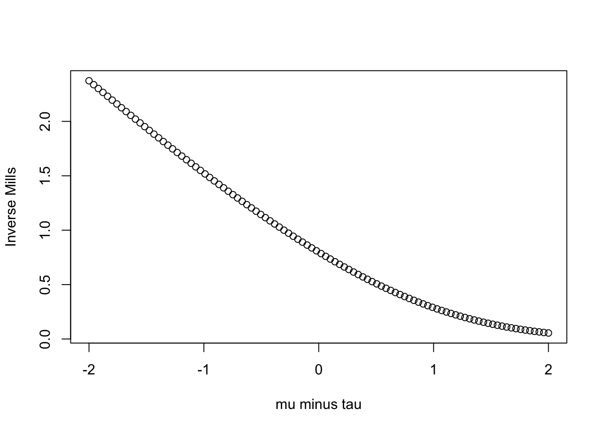
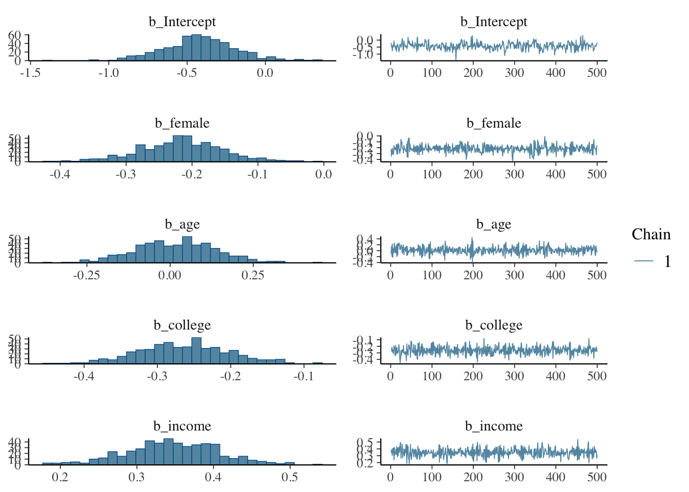
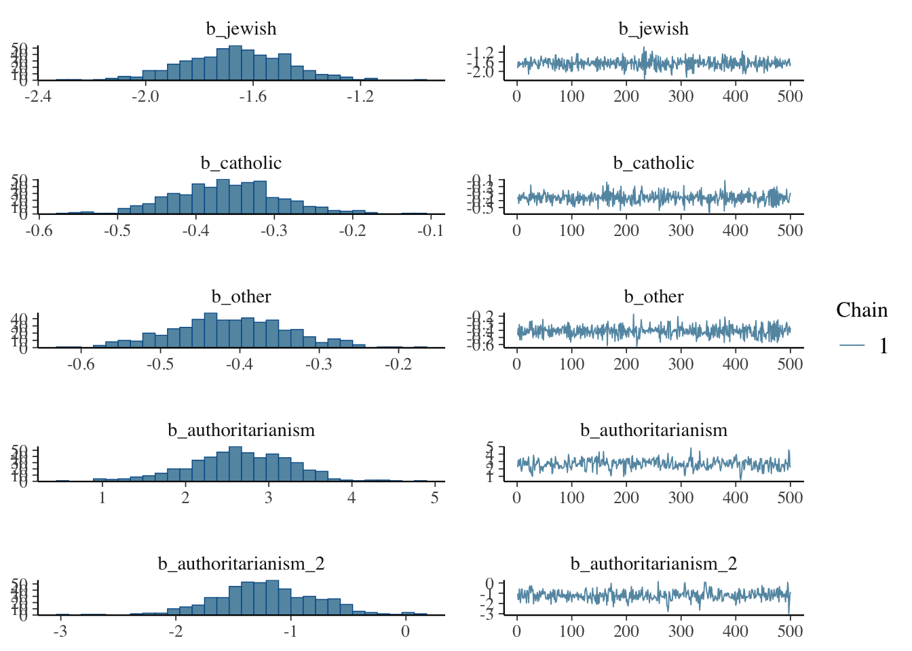
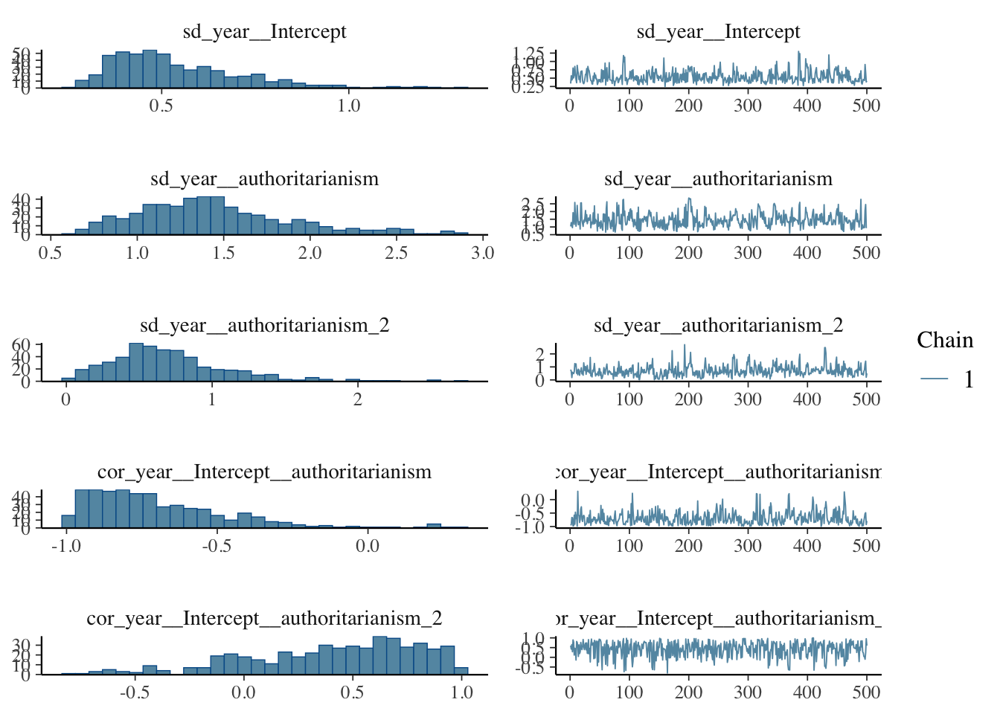
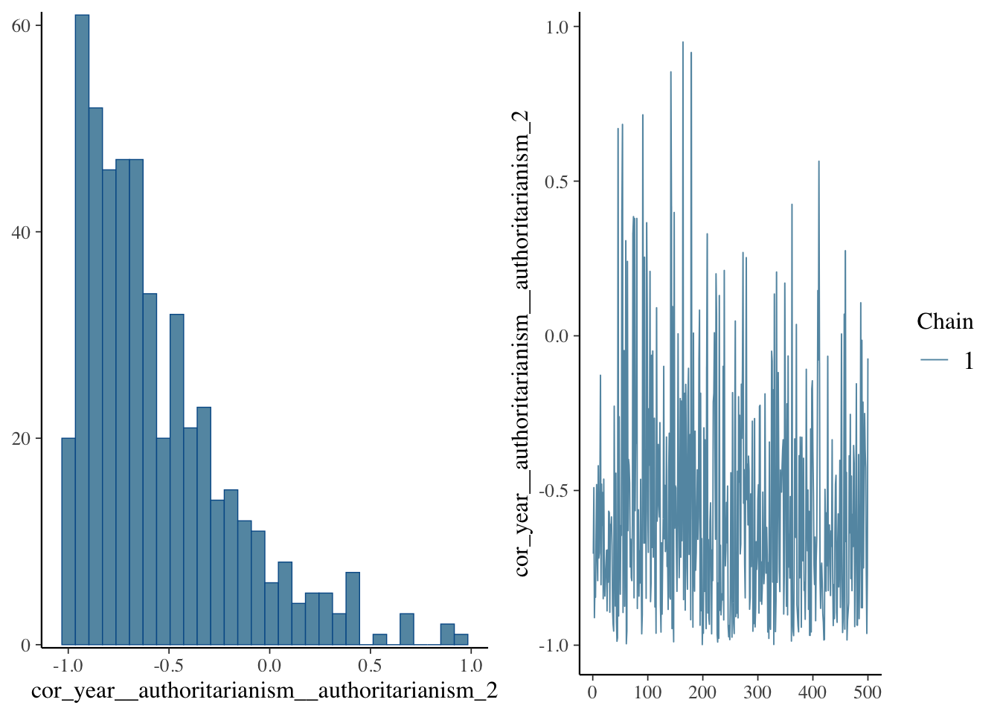
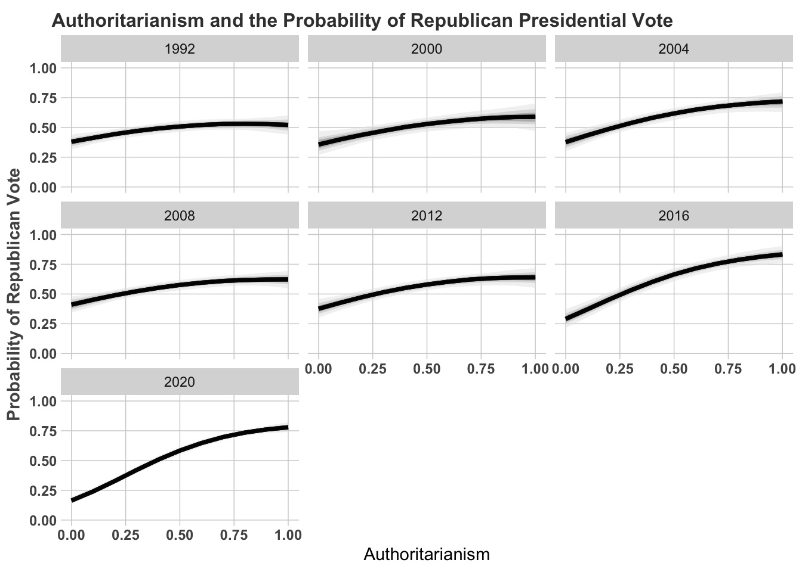

This chapter covers Long (1997, Chapters 7-8), along with McElreath (2020, Chapter 11). Many variables in the social sciences consist of integer counts. Number of times a candidate runs for office, frequency of conflict, number of terror attacks, number of war casualties, number of positive statements about a candidate, number of homicides in a city, and so forth, are examples of “count data.” It may be appealing to assume that because these variables take on many values, it is reasonable to use ordinary least squares. Generally, this is ill-advised, since the distribution of these variables are non-normal. If you just “eyeball” the histogram of a count data set, chances are it looks far from normal; its often either extremely positive or negatively skewed.
We will consider several versions of count regression models. Starting with the Poisson Regression Model (PRM), we will estimate the mean rate of an observation, conditional on a set of covariates. A strong – often untenable assumption of the PRM is that the mean of the rate of an observation equals the variance. If you recall, the Poisson density function states that \(E(\mu)=var(y)\). This is perhaps the primary reason the (PRM) often provides a relatively poor fit-to-data. If the variance is greater than the mean, we are said to encounter over-dispersion; if it is less, then we encounter under-dispersion. If we encounter the former, we may estimate a negative binomial regression model.
One cause of under-dispersion is a preponderance of zeros. Think about recording the number of homicides in cities throughout the U.S. Many cities will have zero homicides. If we look at a histogram of our data, a bunch of observations will cluster at zero. This will deflate the variance estimates. In this case, we might think of our estimation occuring in two stages: First, estimate the probability that a positive count is observed, and then conditional on this probability, estimate the estimated number of counts. In the above example, estimate whether at least one homicide is observed, and conditional on this, estimate the expected number of homicides.
It’s perhaps easiest to begin with the less-plausible, though mathematically simpler Poisson Model.
7.1.1 The PRM
Ignoring covariates, variable \(y\) is said to be distribute poisson if,
\[p(y|\mu)={{exp(-\mu)\mu^y}\over{y!}}\]
If \(y\) takes on values from 0, 1, 2, 3, etc. (Long 1997, p. 218). In this density, the only parameter that governs the shape of the density is \(\mu\) or the “rate” parameter. If \(\mu=0.12\), let’s calculate the probability of 3 discrete values: 1, 2, and 3.
library(pscl)
Classes and Methods for R originally developed in the
Political Science Computational Laboratory
Department of Political Science
Stanford University (2002-2015),
by and under the direction of Simon Jackman.
hurdle and zeroinfl functions by Achim Zeileis.
(exp(-0.12)*0.12^1)/factorial(1)
[1] 0.1064305
(exp(-0.12)*0.12^2)/factorial(2)
[1] 0.006385827
(exp(-0.12)*0.12^3)/factorial(3)
[1] 0.0002554331
# Or justdpois(1,0.12)
[1] 0.1064305
dpois(2,0.12)
[1] 0.006385827
dpois(3,0.12)
[1] 0.0002554331
Let’s look at the PDF at several values of \(\mu\). Notice how as the rate increases, the peak of the distribution shifts to the right. This is to be expected, since the mean is a larger and larger value, moving away from zero. Thus, as the rate parameter increases, notice how the variable starts to look more an more symmetric. What is more, the single-peaked nature of the distribution makes it look normal as the rate parameter increases.
A characteristic of the poisson distribution is that \(E(y)=var(y)=\mu\), an assumption called equidispersion.
If \(\mu\) is the rate parameter, we can then model \(\mu_i\) based on a set of covariates. That is,
\[\mu_i=E(y_i|x_i)=exp(\alpha+\beta x_i)\]
We exponentiate \(\alpha+\beta x_i\) because this prediction must be positive; the rate parameter must be positive. What this allows us to do is now (again) incorporate a structureal component in the model. Perhaps we predict the number of homicides with the size of the population. Or, we predict the number of war casualties military spending. Incorporating this component allows us to move from the poisson density to the PRM.
Long (1997, p. 223) notes that this is form of a non-linear regression model with heteroskedastic errors. Let’s see why.
\[\mu_i=exp(\alpha+\beta x_i)\]
Let’s just assume \(\alpha=-0.25\), and \(\beta=0.13\) as Long does (p. 221). If we plot the expected values of \(y\) for a number of \(x\) values, then
When \(x=1\), then the expected number of counts – the rate parameter – is 0.89 (exp(-0.25 + 0.13* 1)). When \(x=10\) then the expected number of counts is 2.85. But, recall the errors in any model is just the prediction \(E(y|x)\) minus the actual counts. Well, we also know that the distribution of errors around each point, if distributed poisson, will vary depending upon \(E(y|x)\). Here is the poisson density when the expected value is 0.89 (corresponding to \(x=1\)).
Clearly, we cannot assume homoskedasticity. And, because we know that the rate parameter has to equal the variance, we then know that \(E(y|x)=exp(\alpha+\beta x_i)=var(y|x)\). The variance is a function of the covariates. Again, what this implies is that if we have a count process that is poisson, and we attempt to estimate an OLS, we will violate the assumption of identical and normally distributed errors.
If the expected value of the PRM is \(E(y|x)=exp(\alpha+\sum_K \beta_k x_{k,i}\). As Long notes, there are a variety of methods available to interpret these results.
Let’s start by considering the partial derivative of \(E(y|x)\) with respect to \(x_k\). Using the chain-rule. Call \(u=\alpha+\sum_K \beta_k x_{k,i})\). So, \({{\partial y}\over{\partial u}}{{\partial u}\over{\partial x}}\). For \(E(y|x)\)
\[{{\partial E(Y|X)}\over{\partial x_k}}={{\partial exp(u)}\over{\partial u}}{{\partial u \beta}\over{\partial x_k}}\]
So, the effect of \(x_k\) on \(y\) is now a function of the rate parameter and the expected effect of \(x_k\) on that rate parameter. It’s not a constant change in the expected count; instead it’s a function of how \(x_k\) affects the rate as well as how all others relate to the rate! Again, this makes the model somewhat more difficult to interpret.
What effect does a \(d_k\) change in \(x_k\) have on the expected count. Take the ratio of the the prediction including the change over the prediction absent the change (Long 1997, p. 225):
\[{{E(y|X, x_k+d_k)}\over{E(y|X, x_k)}}\].
The numerator is: \(E(y|X, x_k+d_k)=exp(\beta_0)exp(\beta_1 x_1)exp(\beta_2 x_2)...exp(\beta_1 x_k)exp(\beta_k d_k)\).
The denominator is identical with the exception of the last term (why?): \(E(y|X, x_k)=exp(\beta_0)exp(\beta_1 x_1)exp(\beta_2 x_2)...exp(\beta_1 x_k)\).
When we take the ratio of the two, we’re left with \(exp(\beta_k d_k)\). Which lends itself to the interpretation that for every \(d_k\) change in \(x_k\) we’re left with an expected \(exp(\beta_k d_k)\) change in the expected count of y. As always \(d_k\) could be anything. It could be 1, corresponding to the common unit change interpretation. It could be a change going from the 10th to 90th percentiles. It could be a standard deviation. Regardless, we know that the exponentiated term indicates the change in the expected outcome (of course, holding constant the remaining variables) (Long 1997 p. 225).
Similarly, we could calculate the change in the expected value of \(y\) with a discrete change in \(x\). We would just calculate the expected value at two values of \(x_k\) and take the difference.
Finally, we could use the model to generate the predicted probability of a count
So, given our model, we could predict the probability that \(m=1\), 2, and so forth.
We’ll see some examples of this using the \(\texttt{pscl}\) package. For instance, the data consist of the productivity of 915 biochemistry students after receiving PhD. Clearly the data are non-normal.
So, remember that the variable will have a different effect depending on values of all the other variables. Now, one of the issues with the PRF is that it is unrealstic to expect the variance of \(y\) will be equal to the mean of \(y\). We might encounter either under or overdispersion brought about by unobserved heterogeneity.
It is useful to rely on an alternative model that doesn’t treat \(\mu\) as fixed, but rather it is drawn from a distribution, i.e., \(\mu_i=exp(\alpha+\sum_K \beta_k x_{k,i})\beta_k+\epsilon_i)\). Enter the negative binomial regression model.
7.1.3 The Relationship Between Counts and Binomial Draws
We should take a break for a moment, to explore the relationship between counts and binomial draws. The binomial distribution is the probability of observing \(k\) successes in \(n\) trials. The probability of observing \(k\) successes in \(n\) trials is given by the binomial density:
Where, \(n\) is the number of trials, \(k\) is the number of successes, and \(\theta\) is the probability of success. The expected value of the binomial is \(E(k)=n\theta\) and the variance is \(var(k)=n\theta(1-\theta)\). Something we haven’t discussed much is the relationship between the binomial and poisson, or even between the normal and the poisson (or binomial). In fact, these distributions are all related, falling under the family of distributions known as the exponential. McElreath (2023), Chapter 10 (particularly Figure 10.6) does a nice job explaining why.
In a nutshell, if \(y \sim Exponential(\tau)\), then \(y\) is a member of the exponential family.
# Load necessary librarieslibrary(plotly)
Loading required package: ggplot2
Attaching package: 'plotly'
The following object is masked from 'package:ggplot2':
last_plot
The following object is masked from 'package:stats':
filter
The following object is masked from 'package:graphics':
layout
# Set the rate parameter for the Exponential distributiontau <-1# Generate a sequence of x valuesx <-seq(0, 10, length.out =1000)# Compute the density of the Exponential distributiony <-dexp(x, rate = tau)# Create a data frame for plottingdata <-data.frame(x = x, y = y)# Create the plot using plotlyplot <-plot_ly(data, x =~x, y =~y, type ='scatter', mode ='lines') %>%layout(title ="Exponential Distribution",xaxis =list(title ="x"),yaxis =list(title ="Density"))# Display the plotplot
The exponential is governed by one parameter, a rate parameter, \(\tau\). Often in practical applications, scholars will use $^{-1}, displacement. The exponential is used regularly in the social sciences, from the distributions we’ve already explored, to duration models, counts, and events over time. We can modify the exponential, to form some of the distributions discussed. We can think of this simple model as modeling the time for an event to occur – failure for instance. How long does a member of congress serve? Or how long until a product stops working. The gamma is in the exponential family, we can think of it as the the sum of multiple exponential distributions.
For instance, we often use the Gamma distribution. The gamma is always positive, with values 0 or greater.
# Load necessary librarieslibrary(plotly)# Set the shape and scale parameters for the Gamma distributionshape <-2scale <-1# Generate a sequence of x valuesx <-seq(0, 10, length.out =1000)# Compute the density of the Gamma distributiony <-dgamma(x, shape = shape, scale = scale)# Create a data frame for plottingdata <-data.frame(x = x, y = y)# Create the plot using plotlyplot <-plot_ly(data, x =~x, y =~y, type ='scatter', mode ='lines') %>%layout(title ="Gamma Distribution",xaxis =list(title ="x"),yaxis =list(title ="Density"))# Display the plotplot
The binomial is also in the exponential family. If we were to count multiple exponential events, then we have a binomial. If the number of repeated trials is large, \(n\) is large, then the binomial converges to a poisson, where \(\tau = np\). I think about these as if we start with an exponential, and then depending on our research goals, we might adopt a regression model that is a member of the exponential.
7.1.4 The Generalized Linear Model
We’ve been using the GLM throughout this class. The process is related to the notion of the non-linear or latent framework introduced at the beginning of the term. Separate the structural from the measurement. The measurement model describes the mapping of the latent variable to the observed variable. For instance, perhaps \(y \sim Binomial(n, p_i)\). This is the measurement component, and it’s often nonlinear, as here. The structural component is linear, where \(f(p_i) = X\beta\). We join these two components by a link. For instance, we might say that \(y\) is distributed binomial, with parameter \(p_i\), and \(p_i\) is then written as a function of some set of covariates, by a logistic (or normal) link. This is precisely why in \(\texttt{R}\) you’ll write something like \(\texttt{glm(y ~ x, family = binomial("logit))}\).
What’s incredibly useful is that the convention applies to countless models. We start by denoting how the unobserved part of the model turns into the observed data.This is the measurement model. The structural model is the linear model is usually where our interests reside. We might predict the “log-odds” of a binary outcome, using a set of covariates.
7.1.5 A Useful Framework
Returning to our formulation of the scientific and statistical models. Statistical can be easily written, for example, as
\[
y \sim Binomial(n, p_i) \\
f(p_i) = X\beta
\]
If we adopted a Bayesian approach, we would also specify the priors on the parameters,
When describing a model, this is the place to start. It encapsulates everything into a single, easy-to-read framework that obviates the need to write out the model in one line.
7.1.6 Expanding Further
The binomial distribution can be reexpressed in a number of ways. For instance, we’ve been thinking about the notion of independent Bernoulli trials, that when aggregated form the binomial density, often useful when modeling the probability of a 0/1. But we might rephrase how this aggregation unfolds. Instead of modeling \(k\) successes, we could ask questions like, how many times will we fail before we succeed. How many consecutive hits does a baseball player get before striking out? Or, how many submissions to a journal before a manuscript is accepted? The method of aggregation has changed, but the underlying data-generating process is the same.
Incidentally, this kind of thing is quite common in the social sciences. We observe a large, disaggregated data, but then choose to structure it in particular ways to address a research question. For many years, I thought of inferential statistics as a toolkit with loosely related tools meant to address these questions. In fact, if we view the initial DGP as an exponential process, the various models we’ve explored arise from aggregating exponential distributions.
The negative binomial distribution is the probability of observing \(r\) failures before observing \(k\) successes. Recall the binomial density is the PDF stemming from \(k\) independent bernoulli trials. The \(\theta\) parameter will govern its shape. We can modify the logic (and code) slightly to generate a probability of observing \(r\) successes, given \(n\) trials. For instance, how many times would we need to flip a coin in order for three heads to appear, or four heads, and so forth? We can model the probability density of all non-successes as a binomial density, where
\[({{s+f-1}\over{s}})\theta^{f}(1-\theta)^{s}\]
\(f=\)number of failures, \(s=\)number of successes.The total number of trials is just \(s+f\). Notice that all that’s really changed is the coefficient in the front. The notion of independent Bernoulli trials is sztill made.
Thus, we might ask, ‘’if \(\theta\) represents the probability of striking out, how many at bats are expected before a batter strikes out once, or twice, or 10 times?’’ Or, how many games must the Minnesota Vikings play in the 2024 NFL season before they lose three times? Here, define ‘’success’’ as striking out (that is the outcome we’re interested in), or losing two games; ``failure’’ is at-bats before striking out or number of games before losing twice. You should see how this distribution will help us out with counts – if we think of counts as independent events, conditional on \(\theta\),then we can formulate a probabilistic statement about the number of occurences of \(y\).
This version of the binomial is called the negative binomial because if expand and then rearrange the binomial coefficient, it will equal
\[-1^s({{-f}\over{s}})\]
The multiplication by \(-1\) corresponds to the negative part in its label. Incidentally we can reexpress the binomial coefficient as the ratio of two gamma densities, you may recall this from POL 681.
This turns out to be a useful property, and it can be shown that if we define a mixture of gamma and poisson distributions, this will produce the negative binomial distribution. Let’s see how.
7.2 Capturing Dispersion
Here, I rely heavily on the notation in Long (1997), pp. 231-233. I’ll mainly describe the derivations he provides.
A limitation in the poisson regression is that \(E(y)=var(y)\) and rarely is it the case that our model will effectively capture heteregeneity in counts. As a result, the model will be consistent but inefficient. If we have overdispersion – \(E(y)<var(y)\) – then our standard errors will be too small and we will be too over confident in our results (the test statistics will be too large; the posterior will be too narrow).
So, instead of every unit being governed by the same rate parameter, each count is governed by its own Poisson density. Or, as Long notes, we could say that the rate parameter is subject to error – it varies across counts.
\[
y_i \sim NegativeBinomial(\mu_i, \delta) \\
\]
The \(\tau_i\) is a Poisson rate, but \(\delta\) controls the variance. The negative binomial, or the gamma-poisson, is a mixture of the Poisson and Gamma densities.
That is, it follows some distribution (we’ll use gamma).
To calculate \(p(y|\mu^*_i)\) we need to assume that \(d_i\) follows from some density, and then we should integrate (i.e., average) over this unknown parameter to obtain the joint density of \(y\) given \(\mu_i\). Let’s assume that \(d\) follows a gamma density.
(Long 1997, pp. 231-233). Notice the similarity to the negative binomial above. If you compare these two, you’ll see that by using the distribution of \(d_i\) in the integration equation, as well as the poisson, you will find that the negative binomial is nothing more than a poisson mixed with the gamma. What is more,
\[E(y|x)=\mu_i\]
But, the variance is no longer \(\mu_i\)
\[var(y_i|x)=\mu_i(1+({{\mu_i}\over{v_i}}))\]
The \(v_i\) parameter governs the shape of the gamma density. Another way to write this is,
\(v_i=\alpha\) and alpha is the dispersion parameter (Long 1997, p.233). Thus, although the mean predictions are identical in the PRM and the negative binomial model, the variances will differ. Simply substitute values for \(\alpha\) to see how this works. If you do this, you will notice both a different shaped distribution for expected values; you will also notice considerable heteroskedasticity. Thus, the negative binomial regression model is particularly useful in addressing one of the features of the PRM that contribute to poor fit: The mean and variance are often quite different. While the two are equivalent in their mean predictions, they will differ in their variance estimates. This should be reasonably intuitive. If you remember, we simply specified a distribution around \(\epsilon\) in the mean prediction. This won’t impact the mean prediction, it will impact the variance estimate.
The negative binomial model is an example of a mixture model that has a closed form maximum likelihood solution, where we maximize,
Where, again, we can specify a mean structure by \(\mu_i=exp(\alpha+\sum_K \beta_k x_{k,i})\). Because the negative binomial model has the same mean expectation, interpretation of the parameters is identical to what we observed with the PRM. The specification is also quite simple in \(\texttt{R}\) using the \(\texttt{quasipoisson}\) function.
Relative to the PRM, notice how the point estimates are identical, but how the standard errors are bigger. This is often a defining characteristic of the negative binomial regression – the standard errors will be larger, because the PRM doesn’t adequately capture overdispersion.
7.2.1 Truncated Counts
These notes follow the second half of Long (1997), Chapter 8.
It is not uncommon to have truncated data. Truncation means data that fall above (or below) a specific value. As an example, say I want to estimate the impact of ideology on dollars spent during an election cycle. I only have data among those who end up on the general election ballot. The data are truncated. I’ve excluded all primary election cases. I have no data for these individuals – and by no data, I mean no independent or dependent variables.
Count data is often truncated; for instance, it may be truncated at the zero point. If the data truncated at zero, we should not estimate a standard PRM or negative binomial model. Both will predict zero counts, but we cannot observe zero counts in practice. Again, call the count model:
\[p(y|x)={{exp(-\mu_i)\mu_i^{y_i}}\over{y_i!}}\]
If we were to predict the probability of a zero count, notice how this reduces to \(p(y_i=0|x_i)=exp(-\mu_i)\). If we were to predict a non-zero count, by the law of total probability and the fact that counts can’t be negative, \(p(y_i>0|x_i)=1-exp(-\mu_i)\). Now, what we really need to estimate in practice is a conditional probability, that is, \(p(y|y>0)\) – what is the probability of a non-zero count. Recall, a conditional probability, \(p(y|x)=p(x,y)/p(x)\) from the first week of class. Here, since, we are interested in the joint probability of \(y\) counts, then we have,
By multiplying the normal poisson PDF, by \(p(y>0|x)\). Stare at this a bit and realize what we’re doing. We are multiplying the probability of positive counts by \(1/(1-exp(-\mu_i))\). If we were to ignore this factor, we would underestimate positive counts, because the standard poisson density assumes zero counts are admissable. In the truncated sample, they are not. This means repartitioning the probability as a conditional probability that only positive counts. What this also means, however, is that the expected prediction is conditional on a positive count, where (Long 1997, p. 239)
\[E(y|y>0, x)=\mu_i/[1-(exp(\mu_i))]\]
Just as the density is transformed into a conditional probability, so is the expectation (i.e., it is a conditional expectation). Likewise, the variance is also based on the conditional distribution. We could also extend the negative binomial model to a conditional expectation. Here, we just replace the mean structure portion by the conditional expectation (p. 240).
7.3 Zero Inflation
Count data often include a lot of zeros. This is often because the zeros are a function of a count process and an additional process. Think about a time-series-cross-sectional dataset that codes the number of war casualties in twenty countries over a twenty year period. Thus, each country is represented 20 times, yielding a 400 observation dataset. For each country-year combination, there is an entry for the number of war casualties.
Now, an entry of zero may mean one of two things. First, if a country is engaged in conflict, there may be zero casualties because of superior defenses, fewer “boots on the ground,” and so forth. Yet, a country-year would be coded as zero of there were no casualties because there was no active conflict. I’ll use this as a running example, though we could think of other applications (e.g., number of religious advertisements aired by a candidate, number of ideological statements by a politician, etc.).
The basis of a zero inflation model is there is a “count process” and a process that is “zero generating.”
Zero stage. Let’s first model the probability that a country has a zero count, or non-zero count. Call \(\theta_i\) the probability that \(y=0\) and \(1-\theta_i\) is the probability that \(y>0\). Thus, we could model the probability of a zero by a simple logistic or probit regression.
Non zero stage. Then, model the count process, conditional on a non-zero count. Here, we may estimate a PRM or a negative binomial count process.
The key thing to understand is that this is a two stage process: Model the count process conditional on the unit exceeding the zero process. Let’s examine this in more detail.
Consider what it means for a unit to have a zero. In our example, this may mean (1) the country has a zero in the count process (e.g., defenses), or (2) a country has a zero because it’s not engaged in conflict. First, let’s just model the probability of a zero by a simple logit or probit regression.
\[\theta_i=F(z_i\gamma)\]
Where \(z_i\) represents a series of predictors and \(\gamma\) represents the regression coefficients. In other words, \(\theta_i\) is what it always has been, the probability of a ``success’’ where success here means a zero count. Mathematically, the probability of a zero count is then:
\[pr(y_i=0|x_i)=\theta_i+(1-\theta_i)exp(\mu_i)\]
It is a composite of \(\theta_i\), being zero because of a lack of conflict, or a probability of \((1-\theta_i)exp(\mu_i)\) in the count process. You will recognize that the rightmost portion of the equation is just the expected value of a zero in the PRM.
Again, we just have a count process weighted by the probability of a non-zero. If we combine these two things, we may model the mean generating process \(\mu_i\) as a function of covariates (just like we did in the PRM and negative binomial model). And, we can also model the zero generating process by a logistic or probit regression. We may also extend the model to account for heterogeneity in the PRM, by extending the count process to be a negative binomial regression (Long 1997, 245). Zero inflated models may be estimated using the pscl package.
7.4 Hurdle Models
A related model is what’s called a hurdle model which models two stages, but in a slightly different way. In the first stage, we simply represent the probability of observing a zero. This is a simple logistic regression.
\[\theta_i=F(z_i\gamma)\]
In the second stage, we can then model positive counts by way of a truncated poisson distribution.
Thus, in the first stage we are modeling the probability of a zero; in the second we are estimating the probability of a count, conditional upon a non-zero value.
In both models – zero inflated and hurdle – there are two latent variables: One corresponding to the probability of a zero, and a second corresponding to the mean structure of the count process. They often give very similar results.
7.5 Censoring and Truncation
When we discussed the truncated poisson model, I noted that in many circumstances we observe a dataset that is truncated. Truncation means we only have data that fall above or below a particular value of the dependent variable. I used the example of ideology: say I want to estimate the impact of ideology on dollars spent during an election cycle. I only have data among those who spend at least 50,000 dollars. The data are truncated. I’ve excluded all cases less than 50k. I have no data for these individuals – and by no data, I mean no independent or dependent variables.
Why might this be a limitation? Well, those who spend less may be more ideologically extreme, thus not convering on the median voter. Thus, perhaps we do not observe the full range of ideological scores, nor do we fully capture the relationship between ideology and spending (if, perhaps, ideologically extreme candidates get disproportionately less campaign donations).
Truncation means the data itself are fundamentally changed by the truncation process. We simply do not have data for candidates who spend less than 50,000 dollars. Constrast this to censoring, which involves missing data for a dependent variable, but complete data for the covariates. Applied to the election example, say I have the ideology scores for all candidates, but I do not have spending data if the candidate spent less than 50,000 dollars. Thus, censoring does not alter the composition of the data; I have access to the exact same set of observations, even though the data are missing on \(y\).
Fundamentally, this is a missing data issue. Say I don’t observe any value of the dependent variable if the dependent variable is less than \(\tau\). Then,
If I also observe that \(x_{k}=NA\), when \(y_{latent}\leq\tau\) then I have truncation. If, however, I observe \(x_{k}\neq NA\), when \(y_{latent}\leq\tau\) then I encounter censoring.
This type of thing often occurs in circumstances with non-random selection. Perhaps we are constructing our own dataset and cannot observe the full range of outcomes. Truncation and censoring –while they have statistical solutions – are primarily a research design, data collection issue.
Take the classic example offered by James Tobin (1958). Assume the dependent variable is the amount of money spent on a new car. Let’s also assume everyone has income, and they have a set dollar price that they will spend on the car. If the car is priced more than this value, they cannot buy the car (even though they would like to buy the car). We only observe car purchases if the cost of the car is less than the amount the person is willing to spend. In short, for all people who have a value less than this threshold, we observe missing data.
We could simply drop these people and estimate a regression line predicting spending with income. The problem is that we will underestimate the slope and overestimate the intercept. That is, we over-estimate what lower income people would spend on a car. The reason we will oberve bias is that the expected values of the errors will no longer equal zero.
People tend to forget that truncation and censoring is a very real issue in applied settings. As this example suggests, multivariate statistics does not solve the problem, and we are left with the problem of bias in our models.
Really, the problem is related to the notion of missing data, which we will spend the next few weeks discussing. In the case of censoring and truncation, we have data that are systematically missing and the missing data are said to be *non-ignorable*. They aren’t missing by some randomly generated process; they are instead systematically missing by being observed above or below a threshold.
Let’s fully parse why this matters. I’ll present the why in several different ways. First, we’ll look at simulated data, and will explore the issues involved in censoring and truncation and how the problem cascades across the classical regression model. Next, we’ll consider the problem from the perspective of missing data and I’ll demonstrate that the process of missing data regarding censoring and truncation is non-ignorable.
Finally, we’ll see what consequences missing data has in terms of univariate statistics. I’ll spend a fair amount of time on the truncated normal, which serves as a valuable foundation to establish the multivariate solutions we will discuss next week.
7.6 Ignorability
When we think about truncation or censoring, notice this is a missing data problem. Our data are systematically missing for particular values. At this point, let’s more thorough consider the process that produces our data. Following Gelman et al (2014), assume we have a complete data set, \(y_{complete}\); though let’s assume that some values of \(y\) are missing. We don’t know if these values are systematically missing, but we have a vector of missing and non-missing values \(y_{observed}\) and \(y_{miss}\). Let’s assume that we then create an indicator, coded 1 if missing and 0 if observed. Now, \(I \in (0,1)\).
Often, we assume what is called ``ignorability’’ in our data. Data simply means we may safely ignore, or not model, the mechanism that produced the data (Gelman et al 2014, p.). Ignorability – which is suspect in the truncated or censored data – can be decomposed into two things, though here we only need consider 1 (the other will come in the missing data week).
\(\star\) Data are missing at random (MAR), which is:
\[p(I|x,y,\phi)=p(I|x,y_{observed},\phi)\]
Here, \(\phi\) represents the parameters that generate the missing data. MAR simply means that the only factors that predict missingness stem from the data and the parameters linking the data to missingness.
Borrowing Gelman et al’s (2014) example, consider income and tax auditing. We want to predict how well income predicts the likelihood of being audited. Now, assume that only people who make more than 10 million are audited.
Because I know exactly who is missing by the research design. Then,
\[p(I|x,y,\phi)=p(I|x,y_{observed},\phi)\]
which reads: Conditional on the data, I know the probability a data point is missing. MAR does not mean that the data are missing conditional on a single latent variable; it means that given the observed \(y\) and x, along with a set of parameters, we know the the probability of the full data set.
Now considering truncation and censoring, note why ignorability shouldn’t hold. The data are systematically missing by being greater (or less) than \(\tau\). Only conditional on \(\tau\) will ignorability hold.
This has the consequence of an error term that has a non-zero mean; or you might think about this as errors are correlated with predictor variables. In both cases, we observe that the estimates are both biased and inconsistent.
7.7 Distributions
Part of the problem with the above examples is that I am assuming normally distributed errors; yet the errors are not normal, if I’m systematically deleting or partitioning observations to be a certain value. It’s most useful to thin about censoring and truncation in terms of latent variables. If we assume that,
But, if we only observe the latent variable when it is above or below a threshold, \(\tau\), we cannot assume that \(y_{observed}\) is normally distributed. Instead, we need to model the conditional probability of \(y\) given it is above (or below) \(\tau\). Just as we did with the truncated poisson density, we simply divide the pdf by the cdf, evaluated from \(\tau\) to \(\infty\).
So, if we only observe data greater than \(\tau\), then,
We’re again calculating a conditional probability; what is the probability of observing \(y\) given that \(y\) exceeds the truncation point. Just as was the case with the truncated poisson, this involves essentially re-partitioning the truncated portion of the distribution. In the context of a truncated normal (it need not be normal, we can do this with other densities), then:
When I first learned this material, I had to stare at this a bit. The numerator is simply the normal pdf, but we are dividing by the normal cdf evaluated for the distribution greater than \(\tau\). Another way to see this is swap the denominator with \(1-\Phi{{\tau-\mu}\over{\sigma}}\). The part to the right of \(1-\) is simply the area to the ``left’’ of \(\tau\); yet, we need the remaining area, so we subtract that number from 1.
Let’s take the expectation of this pdf, as it yields an important statistic.
Or, just simply, \(\mu+\sigma \kappa {{\mu-\tau}\over{\sigma}}\), with \(\kappa\) representing, \(\phi(.)/\Phi(.)\). In this case, \(\kappa\) is a statistic called the inverse Mill’s ratio.
Take the part in the parentheses. The numerator is the density evaluated at \({{\mu-\tau}\over{\sigma}}\). The denominator is the probability from \(\tau\) to \(\infty\) (for truncation from below).
What does this mean? If \(\tau\) is greater than \(\mu\), meaning we would have pretty serious truncation, then this ratio will be larger. Notice how the denominator gets smaller But, if \(\mu\) is much greater than \(\tau\) – that is, we don’t have much truncation – this ratio goes to zero and the truncated normal is the normal.
mills.function<-function(x){return(dnorm(x,0,1)/pnorm(x, 0,1))}plot(seq(-2,2, length=100), mills.function(seq(-2,2, length=100)),xlab="mu minus tau", ylab="Inverse Mills")

If\(\mu\) is greater than \(\tau\) (positive numbers), the inverse Mills ratio is smaller than when \(\mu\) is less than \(\tau\) (negative numbers).
7.8 Censored Regression
Let’s start by assuming a censored dependent variable. See Long (1997, pp. 195-196) for the full derivation. As noted by Long, we observe all of \(x\) but we don’t observe \(y\).
So the probability of being censored is \(\Phi(-\delta_i)\) and the probability of not being censored is \(\Phi(\delta_i)\)
7.9 Duration Models
First, I would highly recommend reading the Box-Steffensmeier and Jones book on duration models. It’s comprehensive, easy-to-digest, and targeted towards social scientists. I’ll provide a general overview, particularly of the first few chapters, though you should consult the text if you intend to use these models in your own work. Please note that I follow the terminology and formula from Box-Steffensmeier and Jones (2004) very closely, so it is advised that you use this as a supplement.
Duration models are similar in nature to count models, though with a slightly different orientation. Unlike the count models we’ve explored, typically duration models model “survival” times – the amount of time that elapses before an event ends. As the text notes, in engineering, the focus is perhaps the length of time a part lasts; in epidemiology, the focus might be on the progression of a disease – the amount of time to death; in political science, perhaps the focus is on things like the amount of time a coalition government survives, or how long before precedent is overturned, or how long a country engages in military conflict.
Durations may be purely continuous, or discrete. Indeed, a discrete process might be the number of terms a senator or congressperson serves. Or, the number of days before a piece of legislation is adopted. Discrete processes, as we’ll see, are simple extensions of a logit model. In duration models, we might include covariates that are fixed, others that vary with time. Duration models – or really the data for duration models – have properties similar to those we encountered with count data.
First, data are often right censored. If we observe units over a period of time – our data collection might occur over a one decade period – not all units will “fail.” That is, some will survive past data collection. Our data in this case is censored from the right, because we have little idea how long these units would survive had we continued to collect data. We thus are likely to encounter a fair number of suriving cases, which – while important – provide little information about the survival process.
Second, data are often left truncated. We don’t observe the history of the units prior to data collection. Say we’re measuring survival as number of years in the senate before retiring. We start data collection in 1980 and end data collection in 2022. Perhaps we no very little about those senators who are nearing the end of a long tenure shortly after 1980. We simply don’t have information about these individuals.
Third, the covariates in the data are likely to be time varying. The covariates – perhaps spending on congressional campaigns – fluctates over time.
These three characteristics of survival data – again, data which records the length of time before an “event” occurs (death, retirement, overturning precedent, peace) render OLS problematic method to model survival processes. Censoring and truncation pose serious issues in the attempt to estimate unbiased parameter estimates. Time varying processes create a source of autocorrelation, which we also know limits our ability to draw correct inferences.
7.10 Notes on Terminology
Following (Box-Steffensmeier and Jones, 2004), \(T\) is random variable denoting survival times. This variable has a probability density function and a cumulative distribution function.
The distribution of the random variable is:
\[F(T) = \int_0^t f(u)du = pr(T\leq t)\]
We’re just starting with the pdf and integrating, starting with a natural starting point, 0 and integrating over this function to some value \(T\).
All the points are differentiable, so we can go the other way and just define the pdf as
\[ f(t) = {{dF(t)}\over{d(t)}} = F'(t)\]
And,
\[f(t) = lim_{t \rightarrow} = {{F(t) + \Delta(t)- F(t)}\over{\Delta t}}\]. With some infintesimally change in time, we can estimate the unconditional failure rate. the instanteous probability that failure will occur.
This is useful to then write the survivor function, which is
\[S(t) = 1- F(t) = pr(T \geq t)\]
This is the proportion of units surviving past point \(t\). Because a failure event will not occur at time 0, but will increasingly do so as time progresses, the surivival function is strictly decreasing.
We can then use what we’ve developed to define what is known as the hazard rate
\[h(t) = {{f(t)}\over{S(t)}}\]
This is a conditional probability. It is the failure rate over the survival rate. What is the probability that a unit doesn’t survive at time\(t\) given that the unit has survived until \(t\). Or, put another way, given that a senator has served 4 terms, what is the likelihood they will serve four more terms.
7.11 The Exponential Model
Pp. 14-19 in Box-Steffensmeier and Jones is particularly useful to see the interrelated nature of these various functions. But, let’s start with a simple assumption: The hazard rate is constant.
\[h(t) = \lambda \]
It’s a positive constant. It’s flat, it doesn’t change over time. The relevant functions then are
\[E(t_i) = exp(\beta_0 + \beta_1x_{1,i} + \beta_2x_{1,i} + \dots\]) The hazard rate is constant, so a characteristic of this model is that changes to the hazard rate is largely built into the covariates.
The baseline hazard rate in this model is then \(exp(-\beta_0\)), when \(x_1 = 1\) the hazard rate is \(exp(-\beta_0) \times exp(-beta_1x_1) = exp(-\beta_0 - beta_1x_1)\).
Becauzse the model is “memoryless” an alternative is generally more appealing. Let’s spend a little time on the Weibull Model.
7.12 Weibull Model
\[h(t) = \lambda p(\lambda t)^{p-1}\]
This model allows for a more flexible specification of the hazard function, one that might change over time. The Weibull distribution here has a useful property in that when \(p>1\) the hazard increases, when 1 it is constant, when \(p < 1\) it decreases.
The Weibull is particularly useful because we can actually model the hazards, and it gives a test of whether the hazard is truly constant over time (recall, the p parameter should be estimated as approximately 1, if the hazard is constant; otherwise, it is increasing or decreasing with time.
8 Building Examples
8.1 The Poisson
Let’s start with the Poisson distribution. The Poisson distribution is a discrete probability distribution that expresses the probability of a given number of events occurring in a fixed interval. The Poisson distribution is characterized by the parameter \(\lambda\), which is the average number of events in the interval.
8.2 The Data
The data reported below are from the 2020 Western States Survey, a collaborative project of researchers form the University of Arizona, Arizona State University, the University of Utah, University of New Mexico, the University of Colorado, and the University of Nevada. In 2020, we commissioned YouGov to interview 3,577 respondents, which were matched down to a sample of 3,000, the final dataset. The data include an oversample of 600 Latinos.
Voted: Whether the respondent voted for Donald Trump (1) or Joe Biden (0).
Latino: Whether the respondent is Latino (1) or Non Hispanic White (0)
glm(voted ~1+ latino, data = df, family =binomial("logit")) %>%summary()
Call:
glm(formula = voted ~ 1 + latino, family = binomial("logit"),
data = df)
Coefficients:
Estimate Std. Error z value Pr(>|z|)
(Intercept) -0.14197 0.04935 -2.877 0.00401 **
latino -0.68055 0.08642 -7.875 3.4e-15 ***
---
Signif. codes: 0 '***' 0.001 '**' 0.01 '*' 0.05 '.' 0.1 ' ' 1
(Dispersion parameter for binomial family taken to be 1)
Null deviance: 3497.4 on 2587 degrees of freedom
Residual deviance: 3433.4 on 2586 degrees of freedom
(611 observations deleted due to missingness)
AIC: 3437.4
Number of Fisher Scoring iterations: 4
df %>%group_by(latino, voted) %>%summarize(n =n()) %>%glm(n ~1+ voted + latino + voted:latino, data = ., family = poisson) %>%summary()
`summarise()` has regrouped the output.
ℹ Summaries were computed grouped by latino and voted.
ℹ Output is grouped by latino.
ℹ Use `summarise(.groups = "drop_last")` to silence this message.
ℹ Use `summarise(.by = c(latino, voted))` for per-operation grouping
(`?dplyr::dplyr_by`) instead.
Call:
glm(formula = n ~ 1 + voted + latino + voted:latino, family = poisson,
data = .)
Coefficients:
Estimate Std. Error z value Pr(>|z|)
(Intercept) 6.78446 0.03363 201.716 < 2e-16 ***
voted -0.14197 0.04935 -2.877 0.00401 **
latino -0.30595 0.05165 -5.924 3.14e-09 ***
voted:latino -0.68055 0.08642 -7.875 3.40e-15 ***
---
Signif. codes: 0 '***' 0.001 '**' 0.01 '*' 0.05 '.' 0.1 ' ' 1
(Dispersion parameter for poisson family taken to be 1)
Null deviance: 3.5388e+02 on 3 degrees of freedom
Residual deviance: -2.6645e-14 on 0 degrees of freedom
(2 observations deleted due to missingness)
AIC: 40.914
Number of Fisher Scoring iterations: 2
Notice how the coefficients for voted, and Latino:voted, are identical. Why? Voted simply scores the difference in voting for Trump among Non Hispanic Whites. Notice that when \(Latino = 0\), the only thing observed is voted.
On the other hand, to compare Trump voting rates among Latinos, we use all the coefficients from the model. Now, voted:latino corresponds to the different rate of Trump voting among Latinos.
df %>%group_by(latino, voted) %>%summarize(n =n()) %>%glm(n ~1+ voted + latino + voted:latino, data = ., family = poisson) %>%summary()
`summarise()` has regrouped the output.
ℹ Summaries were computed grouped by latino and voted.
ℹ Output is grouped by latino.
ℹ Use `summarise(.groups = "drop_last")` to silence this message.
ℹ Use `summarise(.by = c(latino, voted))` for per-operation grouping
(`?dplyr::dplyr_by`) instead.
Call:
glm(formula = n ~ 1 + voted + latino + voted:latino, family = poisson,
data = .)
Coefficients:
Estimate Std. Error z value Pr(>|z|)
(Intercept) 6.78446 0.03363 201.716 < 2e-16 ***
voted -0.14197 0.04935 -2.877 0.00401 **
latino -0.30595 0.05165 -5.924 3.14e-09 ***
voted:latino -0.68055 0.08642 -7.875 3.40e-15 ***
---
Signif. codes: 0 '***' 0.001 '**' 0.01 '*' 0.05 '.' 0.1 ' ' 1
(Dispersion parameter for poisson family taken to be 1)
Null deviance: 3.5388e+02 on 3 degrees of freedom
Residual deviance: -2.6645e-14 on 0 degrees of freedom
(2 observations deleted due to missingness)
AIC: 40.914
Number of Fisher Scoring iterations: 2
The coefficients, standard errors, etc are the same. This is no coincidence. The two models are both within the exponential family, and just conceive of the “observed” data in different ways, as long-form 1s and 0s, or more compactly as a count of how many 1s and 0s are observed. Often times complicated binomial regression models could be simplified and recast as count regression models, usually with a boost in estimation speed.
Let’s use some public data provided by the Arizona Secrectary of State, voting rates (at the polling place) in Arizona. The poisson and negative binomial models are easily estimated with \(\texttt{R}\)’s \(\texttt{glm}\) call. Notice the slopes stay nearly identical.
`summarise()` has regrouped the output.
ℹ Summaries were computed grouped by percentRepublican and white_proportion.
ℹ Output is grouped by percentRepublican.
ℹ Use `summarise(.groups = "drop_last")` to silence this message.
ℹ Use `summarise(.by = c(percentRepublican, white_proportion))` for
per-operation grouping (`?dplyr::dplyr_by`) instead.
plot =ggplot(tmpdat,aes(x = percentRepublican,y = mean, ymin = lower,ymax = upper )) +geom_point(size =1, alpha =0.5, position =position_dodge(width =0.5)) +geom_errorbar(width = .1, alpha =0.4, color ="grey", position =position_dodge(width =0.5)) +ggtitle("Voting Rates, by Party and Race")+theme_minimal() +# label axesxlab("Percent Republican") +ylab("Polling Place Voting") plot
Warning: `position_dodge()` requires non-overlapping x intervals.
Warning: `position_dodge()` requires non-overlapping x intervals.
Panel data are common in political science. Some of the methods we’ve discussed can be used to analyze panel data, such as the multilevel model. I’d like to spend some time considering an alternative class of models, common in panel data analysis. These are a class of models that are common in political science.
The Markov model follows a simple design – the current realization of a “state” is a function of the past realization of a state. We can think of this as an Autoregressive (AR) process, particularly an AR1. If we conceived of the weather as a Markov process, we would model the probability that it is sunny today, based simply on whether it was sunny or rainy yesterday. We discussed the markov model with the notion of MCMC; here, we simulated the posterior (the Monte carlo part) based simply on the most previous simulation of the parameter value (the markov part). The drunkard’s walk is a Markov process. Zucchini and Macdonald (2009) formalize the Markov property as follows:
If I were to model the probability of a voter being a Democrat today, we would conceive of this as based on whether one was a Democrat yesterday. We call the probabilities of movement across \(C\) states as “transition probabilities.” We can represent the transition between \(m\) realizations of \(C\) as “transition matrix.” The rows represent the realization of a state at time \(t\) and the columsn represent \(t+1\). The sum of the rows must equal 1, of course, in order to be a proper probability distribution
Multilevel data structures are incredibly common in political science. I’ll reference the multilevel model components in a few ways. Sometimes I’ll say level-1 and level-2 (and level-3, level-4, etc). Typically, unit will correspond to the level-1 observation (e.g., country-year, person-wave, person-region, etc). That is, “unit” is the lowest nested level. I’ll refer to “cluster” as the higher nesting level (i.e level 2). For instance, if the data are country-year observations. Then the observation (i.e., unit) is nested within country (i.e., cluster). Please ask if my explanation confuses you. In some cases, a simple convention makes for awkward explanations, in which case I try to adopt a more natural description.
If the classical linear regression equation is,
\[y_{j,i}=\beta_0+\beta_1 x_{j,i}+e_{j,i}\]
Where \(y\) is an observation nested within a country. Then, we may not actually believe that the coefficients are actually fixed in this regression model. Perhaps the intercept in this equation vary across regions. A common technique to deal with this problem is to calculate a unique mean for each country,
\(d_j\) denotes a dummy variable, specified for \(J-1\) countries. This is somewhat inaccurately called a fixed effects model, since the regression parameters are constrained to a specific value. We will talk more about this model over the coming weeks – it is quite common in political science – but an alternative approach is to assume that the regression coefficients are not fixed, but instead are drawn from some probability distribution. Now,
Now, instead of \(J-1\) dummies, we model the intercept as drawn from a probability density; a common one, of course, is the normal.
\[\beta_{0,j}=\gamma_0+e_{2,j}\]
\[e_{2,j} \sim N(0, \sigma^2)\]
Or, we could just compactly write this as
\[\beta_{0,j}\sim N(\gamma_0, \sigma^2)\]
In other words, we think of the model as existing on two levels. At the unit level, we can estimate the linear regression models. But, there may be added heterogeneity across \(j\) clusters – here, countries. This is now captured in the second stage, in which we allow the intercept to vary across \(j\) units. We can extend this model, to include factors that predict the level 2 observations.
Gelman and Hill (2009, 238-239) note that we might envision this two stage models as simply two sets of estimates.
At level 1, we have:
\[y_{j,i}=\beta_{0}+\beta_1 x_{j,i}+ e_{1,j,i}\]
Call this the observation nested within a country.
At level 2 we might specify,
\[y_{j}=\gamma_{0}+\gamma x_{j}+ e_{2,j}\]
In this second stage, we migh predict the country mean on \(y\) with time-invariant country level covariates. This two stage approach may reveal the ecological fallacy. Perhaps country level covariates (or averages) have a different effect than unit level predictors. We might also adopt a mixture of parameterizations to estimate these two stages.
The second stage equation is the country level mean on the dichotomous dependent variable. The first stage equation is then a logit model. This should be an intuitive way to understand the multilevel model. However, manually estimating these two stages can be incorporated into a single stage. The key is to recognize the nesting structure in the data. An observation is nested within a country, a country might be nested in a region, etc. Likewise, students are nested within schools, schools are nested within districts. Or, candidates are nested within race, races are nested within election year.
I find it most useful to actually view the data. So, in a two level multilevel model.
Note, that for the four observations, they are nested in two clusters. We could formulate a regression model for the four observations; we could also formulate a regression model for the country level means (assuming more individuals).
9.1.1 Building the Random Effects Model
First, let’s note some limitations of the fixed effects model. We have to add \(J-1\) dummy variables to the model. An equivalent approach is to just remove the \(j\) level means from \(y\).
This is sometimes called the within effects estimator; it is the linear effect of \(x\) on \(y\) removing any variation that exists with respect to the level two indicator.
Thus, you should see that while this is not necessarily mathematically problematic, we are treating the level two variation as largely a nuisance term. Most folks who estimate fixed effects models don’t bother interpreting the fixed effects coefficients! Often, they’re not even presented in academic publications.
Second, we might with to know how much other effects in our model vary across units. For instance, we could examine whether there is heterogeneity in the unit level effects of \(x\) (\(\beta_1\) above). Of course we could generate interactions between our dummies and these independent variables, but notice how quickly the data expand as \(N\) increases. An alternative is to view parameters as non-constant – i.e., random effects – that follow some distribution.
Let’s use the two stage formulation to establish an alternative parameterization. First, what is the problem with the two stage formulation?
Recall the assumption that \(cov(e_i, e_j)=0, \forall i\neq j\)? Or the assumption that \(e_{j,i}\) are independent and identically distributed? Or, the assumption that the off-diagonal elements in the variance covariance matrix of errors in the regression equation are zero? These all are really one in the same, and they’re likely violated if we have clear ``clustering’’ in our data. If, for example, we have:
We probably shouldn’t assume that the errors between observations 1 and 2 are independent (they come from the same unit); nor should we assume the errors between 3 and 4 are independent. In an applied setting, if we have TSCS data observed over time – each country is listed with multiple observations – we shouldn’t assume that the errors are independent within each country! Or, if we have 10 schools, each paired with 1000 students, the students within the school probably have a lot in common, which translates to a more complicated error process.
In the two stage formulation, we don’t ever correct for this process. In fact, all we are doing is recognizing that there is underlying level-2 heterogeneity. In fact, we could correct for this problem of clustering, while also modeling underlying level-2 heterogeneity, while also not needing to include at least \(J-1\) additional parameters.
At this point, I’m going to modify my indexing to note the nesting structure. In addition to being consistent with Gelman and Hill (2009), its a more accurate way to represent the multilevel nature of the data. Now,
There are no predictors; only variation modeled across two levels – \(i\) nested within \(j\) and variation across \(j\). This is called a “random intercept model.” In particular it’s called the analysis of variance. It’s really no different from the ANOVA formulation you’ve already learned. Here, just envision units nested within treatment conditions.This just separates the variation into between and within units – i.e., between and within conditions. We might also write this in a single ``reduced form’’ equation.
Do you now see the similarity to ANOVA, where \(SS_T=SS_B+SS_W\)? Let’s then extend this model, where intercepts vary across level two units we have predictors that predict both levels.
\(x_{j[i]}\) consist of variables that vary within \(J\) level two observations; \(x_{j}\) consists of variables that only vary between level two observations. We might manaully construct these “between” and “within” variables. For instance, we could include,
\[x_{within}=x_{j}-\bar{x}_{j[i]}\]
\[x_{between}=\bar{x}_{j[i]}\]
These variables are orthogonal and they capture something different – the variation between \(j\) levels and the variation within \(j\) levels. Then,
These are all “random intercept” models, because only the intercept parameter is modeled to vary across \(j\) levels. It is conceivable the model is even more complex, such that the level-1 parameter(s) may also vary across level 2 units.
9.1.2 The Random Coefficients Model
We have applied an additional level of complexity to the model by allowing \(b_0\) to vary, rather than being a constant. We have also included a slope – which is the average slope in the sample. It too might vary across level 2 units. It, however, only varies across subjects and is another way to remove the subject specific effects from the equation. In other words, we could write the model to capture covariate heterogeneity, as:
These models follow a very similar logic to the within subjects ANOVA, which assumes that we can decompose variance into subject specific variance, in much the same way as is done above to remove a correlation between error terms. However, now we have three error terms,
Two of these error terms correspond to the level-2 equations, one for the level-1 equation. The errors capture heterogeneity in \(y\) after conditioning on \(x\) (the intercept), heterogeneity in \(b\) (the slope) unit level heterogeneity. This is called the ``random slope/random intercept’’ or just” “random slope model”
It rarely makes much sense to just include a random slope and a fixed intercept. The reason is that if we intuitively anticipate variation in the covariance between \(x\) and \(y\) why would we not anticipate heterogeneity in \(y\)? Thus, it is almost always the case that if you see a random coefficient or random slope model, you also will see the researcher allowing the intercept to also vary.
There is an added level of complexity to the random coefficient model. Because we are estimating two level-2 errors, we should also consider the covariance between the errors. That is,
\[cov(e_{2,j[i]}, e_{3,j[i]}) \neq 0\]
If we fail to model this covariance, and make the strong assumption that the covariance is zero, we are positing that as the slope changes the intercept does not change. Let’s examine some reasons as to why this is simply unrealistic.
Thus, unlike the random intercept model, the random coefficients model should also model the covariance between the errors. We could extend the model further to include covariates.
These coefficients will capture the extent to which covariates change the \(j\)th value of \(y\) (the intercept equation) and how covariates change the relationship between \(x\) and \(y\) (the slope equation). Condensed into a single equation.
It’s important to dissect what each of these terms imply.
\(\bullet\)\(\omega_0\) represents the average value of \(y\) conditional on \(x\), across level 2 units. It is the average intercept.
\(\bullet\) Level-2 units vary across around this mean value, \(\omega\) according to \(\e_{2,j[i]}\).
\(\bullet\)\(\omega_1 x_{j[i]}\) represents how the \(j\) level response on \(x\) influences the outcome. Think of this as the between cluster effect on \(y\).
\(\bullet\)\(\phi_0 x_{i}\) represents the relationship between the \(i\)th nested in \(j\)th unit on the outcome. This represents the within cluster effect.
\(\bullet\)\(\phi_1 x_{i} x_{j[i]}\) represents the cross-level interaction between the within and the between effect. This is a natural outcome of including an equation for the slope. Not only are we capturing hetereogeneity in the coefficients effect on y, we are also modeling whether heterogeneity is caused by some covariate – which can be stated another way: how does the within cluster effect change at levels of a between cluster covariate.
\(\bullet\)\(e_{3,j[i]}\) represents the unobserved heterogeneity in the slope of \(b_1\).
\(\bullet\)\(e_{1}\) represents the variation in \(y\) for each \(i\) observation nested in \(j\).
9.2 Practical Considerations
I say this regularly, but it is worthwhile to sit down and fully understand the various ways the multilevel model may be written. Gelman and Hill present five ways to write exactly the same model (Chapter 12). It’s an incredibly flexible approach that not only solves the problem of having repeated observations or some clustering in the data, but also allows one to more fully model nuances in one’s data that are not captured by a fixed intercept and/or slope. When might this model be used?
Time-series cross-sectional designs. Assume \(i\) indexes a country-year observation. Say for each country, \(j\), we observe 3 years of data. Our data set then consist of \(J\) countries \(\times\) 3 years. We probably shouldn’t model the observations as independent of one another, since the errors within countries will be correlated (two observations in the U.S. will have more in common than an observation from the U.S and an observation from another country). Thus, we may model country-year observations as the level 1 equation, and country as the level two equation. We could also model dynamic effects in this data, though with only three years, it is probably best to include a dummy variable for \(t_2\) and \(t_3\).
Panel data. Assume \(i\) indexes a person-wave observation. Say for each person, \(j\), we observe 3 waves of data. Our data set then consist of \(J\) persons \(\times\) 3 waves We probably shouldn’t model the observations as independent of one another, since the errors within each person will be correlated. Now, we could include person-wave observations as the level 1 equation, and person as the level two equation.
Cross sectional data. Now the indexing is somewhat different. Say \(j\) indexes a region and \(i\) indexes a person nested within a region. If people within each region have more in common than people between regions, we can again model this error structure. Estimate the person equation at level 1, but allow the intercepts and/or slopes to vary across regions at level-2.
Rolling cross sectional. Again, the indexing is somewhat different, but we still have a clustering to our data. Say \(j\) indexes an interview time and \(i\) indexes a person nested within an interview point. People are now nested within time. Estimate the person equation at level 1, but allow the intercepts and/or slopes to vary across time at level-2. If the time component is long enough, estimate a time series model at level-2 (Weber and Lebo 2015).
Experimental designs. Adopting the multilevel model to experimental data is really interesting. Not only can we view the standard experimental design as a multilevel structure (see above), but we can easily model more complex error structures with this model – such as when individuals are exposed to multiple treatments (the within subject design), when individuals are exposed to multiple treatments and only one level a second factor (the mixed effects design), and when there are so many conditions that individual pairwise comparisons will increase type 1 error. Likewise, the model is conducive to estimating heterogeneity in treatment effects.
9.2.1 A Continuum
There are a few ways to think of the random effects multilevel model. Think of two models anchoring the polls of a continuum. At one extreme is a model. This is the fixed effects model above, in which each level-2 unit has a unique mean value. At the other end of the continuum is the . This is the regression model with no level 2 estimated means. Instead, we assume the level-2 units completely pool around a common intercept (and perhaps slope). Formally, compare
Note that each \(\gamma\) value allows us to predict a unique mean – and there is no common pooling around a particular value. Instead, we assume each level-2 unit is quite different.
In the second case, all level-2 values assume the same mean value \(\beta_0\). This also seems incorrect, in that we assume no heterogeneity. There is a compromise between these two approaches, a model; this is the random effects model. Let’s see why.
This is why this estimate is a compromise: The first part of the numerator represents the movement away from a common mean. Note that as \(n_j\) increases (the group size), the estimate is pulled further from the common mean (which of course is what’s on the right in the numerator).
It’s worth parsing this a bit further. Note the following characteristics:
\(\bullet\) As \(n_j\) increases, the estimate of the estimated mean is influenced more by the group than a common mean. As \(n_j\) decreases – so small groups – the formula now allows for a stronger likelihood that the estimates pools around a single value.
\(\bullet\) As the within group variance increases, the group mean is pullled towards the pooled mean. This also makes sense – we should be more confident in the group mean if there isn’t much within group variation. The reason the denominator is here is to standardized the value of the group mean.
\(\bullet\) As the between group variance increases, the common mean exerts a smaller impact. This is because the large the variation between groups, the less likely it is that all level-2 means pool around a common mean. This again should make sense – we should be more confident in the common pooled mean if there isn’t much between group variation. The reason the denominator is here is to standardized the value of the common mean.
\(\bullet\) The values in the numerator are then weighted by the variation between and within level-2 units.
Another useful statistic is an indicator of how much the total variance is a function of the level-2 variance, or the level-1 variance. This is called the
Thus, the estimate is an estimate of how much of the total variation in \(y\) is a function of variation between level-2 units, relative to within level-1 units. Note the similarities here to ANOVA and how we estimate the proportion of variance explained by the treatment (or \(R^2\)), for instance.
9.3 Some Practical Advice
Consistent with Gelman and Hill (2009) I want to elaborate on several practical pieces of advice (to consider prior to estimating a multilevel model). Let’s discuss these before actually estimating these models.
\(\bullet\) The ICC should decrease as you include level-2 predictors. Intuitively, this should make some sense. As we include covariates that account for an increasing proportion of the between group variance, then we should observe a decrease in the ICC if level-2 predictors are included.
\(\bullet\) Interpretation of the level-2 expected values (i.e., the group means) is based on a compromise between the pooled and no pooling models. It is not the same value one will observe in a fixed effects model. Why?
\(\bullet\) It’s okay to plot uncertainty in the expected group means, but do not misstate notions of “statistical significance.” It is wrong to to ignore grouping variables that are not different from zero. Gelman and Hill provide a nice description on p. 270 of why this reasoning is incorrect. But, just from a pure null hypothesis testing perspective, it makes little sense. A failure to reject a null is not an endorsement of the null. Even if a vast majority of the group means are not different from zero, this does not provide any evidence to switch to a complete pooing model, for instance.
\(\bullet\) If we estimate a regression model with a dummy for every level-2 unit and predictors, the model is not identified because the variables will be collinear (Gelman and Hill 2009, 269). They are not perfectly collinear in the random effects model, because of the compromise between the common mean and the group mean.
\(\bullet\) If there is a suspicion of clustering/level-2 variation, it almost always make sense to estimate the random effects model, because we will see if the multi-level model converges on the pooled model, based on the size of the ICC.
9.4 Estimation Using the \(\textbf{lme4}\) package
The completely pooled model is the classic linear regression model estimated using .
Assuming \(d\) is variable corresponding to a level-2 identifier, the no pooling model is:
simply tells the model that d is a factor variable – a categorical variable that is assigned a numeric value and then subtracts 1, since we can only have d-1 dummies. Thus, the model is just including the dummies.
There are a handful of great multilevel packages in R. One of the older packages is the package. The package is the probably the most popular maximum likelihood package for estimating multilevel models. The package – \(\texttt{lme4}\) – was developed by Douglas Bates and elaborated on in Piheiro and Bates (2000), ``Mixed Effects Models in S and SPLUS.’’
# lmer(y~x+(1|d))
The syntax is identical, with the exception of the rightmost term. This denotes the clustering. Here, 1 – recall this is just the intercept – is nested within variable \(d\). In the next section we will estimate some of these models.
9.5 Advanced Multilevel Models
One of the advantageous characteristics of the multilevel model, is that it can be easily extended to categorical dependent variables. So, for instance, if \(y \in (0,1)\), then we can specify a probability model via a logit or probit link,
Where, again, in the second level, we are specifying a normally distributed error. Notice that the second level equation is linear and requires no transformation. This is because we are estimating the intercept (and/or slopes) averaged across a categorical variable. It is continuous!
Notice how \(e_{1,i}\) is absent in this model. The variance of the error is not directly estimable. Why? Recall, we must fix it at some value for identification – either 1 or \(\pi^2/3\) depending on the parameterization.
Oftentimes, clustering or multilevel datastructures are not so clean. For instance, we might have two levels of clustering, but one level is not neatly nested in the second. For instance, let’s assume I am predicting electoral outcomes using campaign advertising data. Campaign ad data are available at the level of the`Designated Media Area’’ (DMA). These are constructed by Nielsen. Candidate data (e.g., spending) are available at the level of congressional districts. Finally, we have individual level data of participants nested within both districts and DMAs.
The problem here is that districts are not neatly embedded in media markets. Media markets often cross state borders and they are not crafted based on political boundaries. Sometimes a congressional district is located in two media markets. In other words, we do not have a neatly nested situation in which voter is nested within congressional district nested within the DMA. But, that doesn’t mean nesting at both levels is irrelevant. We might estimate something like
\(\bullet\) Again, there is not an estimated \(e_{1,i}\) because this is fixed at the first stage logit regression.
\(\bullet\)\(b_{2}\) represents the ``within cluster’’ effect of x on y.
\(\bullet\)\(\omega_1\) represents the media market (J) aggregated effect of \(x\) on \(y\).
\(\bullet\)\(\phi_1\) represents the congressional district (K) aggregated effect of \(x\) on \(y\).
\(\bullet\)\(e_{2,j}\) and \(e_{3,k}\) represent the errors across media markets and congressional districts, respectively.
When we encounter levels of clustering that are non-nested, this is referred to a \(\textbf{cross classified}\) model. The above example is cross-classified by media market and district.
A \(\textbf{three level}\) multilevel model has two levels of clustering that are nested. For instance, let’s assume we are looking at individual level data, predicted from congressional district level data, and state level demographic data. Here, we have three levels of clustering – individuals nested within congressional districts, which are nested within states. Now,
The model looks somewhat similar to the cross-classified model, but the data are no longer cross classified. Again, we have two higher level errors to estimate.
9.6 Summary
I’ve started this section of the class from a more theoretical level, in order to demonstrate the general flexibility of this modeling approach. It’s always worthwhile to sit down and write out exactly what you would like to estimate, before actually estimating a multilevel model. This is why I’ve introduced so many variations of the same thing. As I’ve suggested, the multilevel model is useful in the following circumstances: (1) our data are hierarchically structured, (2) we wish to model relations at multiple levels, (3) we are concerned about correlated errors, due to “clustering” in either time or space, and (4) we anticipate heterogeneity in covariate and/or treatment effects.
10 Estimation
Let’s now turn to an an example, a test case in how to estimate a multilevel model.
The data consist of American National Election Studies (ANES) cross sections, from 1992-2020. There was a fair amount of “data wrangling” that went into putting this all together, but now the data are in a format conducive to a multilevel model. This is an RCS design, where units are nested in cross sections (Lebo and Weber 2014).
We’ll estimate a multilevel model in a few ways, but let’s start with the bayesian approach, using \(\texttt{brms}\) package in R. The model is as follows.
\[pr(y_{i,t}| x_{i, t}; x^2_{ i, t}; z_{k, i, t}) =\beta_{0,k} + \beta_{1,t} x_{ i, t} + \beta_{2,t} x_{i, t}^2 + \sum_{k=1}^K \beta_k z_{k,i} + \epsilon_{t} + \epsilon_{i,t}\]
where \(K\) denotes the number of control variables, \(t\) cross-sectional year, and \(i\), the \(i\)th respondent (nested within the \(t\) ANES survey). Non-informative priors were used for all the parameters, and the correlations between slopes and intercepts were always estimated (with the exception of the random intercept only model).
10.2 Estimate the Model in \(\texttt{brms}\)
model <-brm(vote~ female + age + college + income + jewish + catholic + other + authoritarianism + authoritarianism_2 + (1+authoritarianism + authoritarianism_2|year),family =bernoulli(link ="logit"),data = df,chains =1, cores =8, seed =1234,iter =1000)
Warning: There were 2 divergent transitions after warmup. See
https://mc-stan.org/misc/warnings.html#divergent-transitions-after-warmup
to find out why this is a problem and how to eliminate them.
Warning: Examine the pairs() plot to diagnose sampling problems
Now let’s examine the posterior distributions
plot(model)




Let’s explore the properties of the model. It’s important to examine the characteristics of the posterior distribution; it’s important to ascertain whether results are reliable.
10.3 Predictions
library(simplecolors)library(tidybayes)## Pull out the relevant models from my output.fit1 = modeldata$party3 =recode(data$pid*6+1, `1`=1, `2`=1, `3`=2 ,`4`=2, `5`=2, `6`=3, `7`=3) %>%suppressWarnings()## Expand the data used to estimate this modeldata[,c("vote", "authoritarianism","female", "age", "college", "income","jewish", "catholic", "other", "year", "party3")] %>%na.omit() %>%mutate(authoritarianism_2 = authoritarianism*authoritarianism) %>%group_by(year) %>%data_grid(female =mean(female), age =mean(age),college =mean(college), income =mean(income),catholic =mean(catholic), jewish =mean(jewish),other =mean(other), authoritarianism =seq_range(authoritarianism, n =11)) %>%mutate(authoritarianism_2 = authoritarianism*authoritarianism) %>%add_linpred_draws(fit1) %>%mutate(Vote_Republican =plogis(.linpred)) %>%ggplot(aes(x = authoritarianism)) +facet_wrap(~year) +stat_lineribbon(aes(y = Vote_Republican), .width =c(.95, 0.75, .5, 0.25, 0.1), alpha =0.5) +scale_fill_manual(values =sc_grey(light =1:5)) +# Format the gridggtitle("Authoritarianism and the Probability of Republican Presidential Vote") +scale_y_continuous("Probability of Republican Vote", limits =c(0, 1)) +scale_x_continuous("Authoritarianism") + ggtheme +theme(legend.title =element_blank()) +theme(legend.position ="none")

We could also calculate the marginal effects. These are the effects of going from the minimum to maximum holding all else at their respective means.
This is the same general idea, but we can change the parameterization. Nearly everything else will remain the same.
main <-brm(party3 ~ female + age + college + income + jewish + catholic + other + authoritarianism + authoritarianism_2 + (1+authoritarianism + authoritarianism_2|year),data = data,family ="categorical",chains =2,cores =6,seed =1234,iter =1200)
Warning: Rows containing NAs were excluded from the model.
Compiling Stan program...
Start sampling
Warning: There were 1 divergent transitions after warmup. See
https://mc-stan.org/misc/warnings.html#divergent-transitions-after-warmup
to find out why this is a problem and how to eliminate them.
Warning: Examine the pairs() plot to diagnose sampling problems
And then we plot the posterior predictions from the model. Instead of a line or bar plot, let’s use a \(\texttt{joy plot}\).